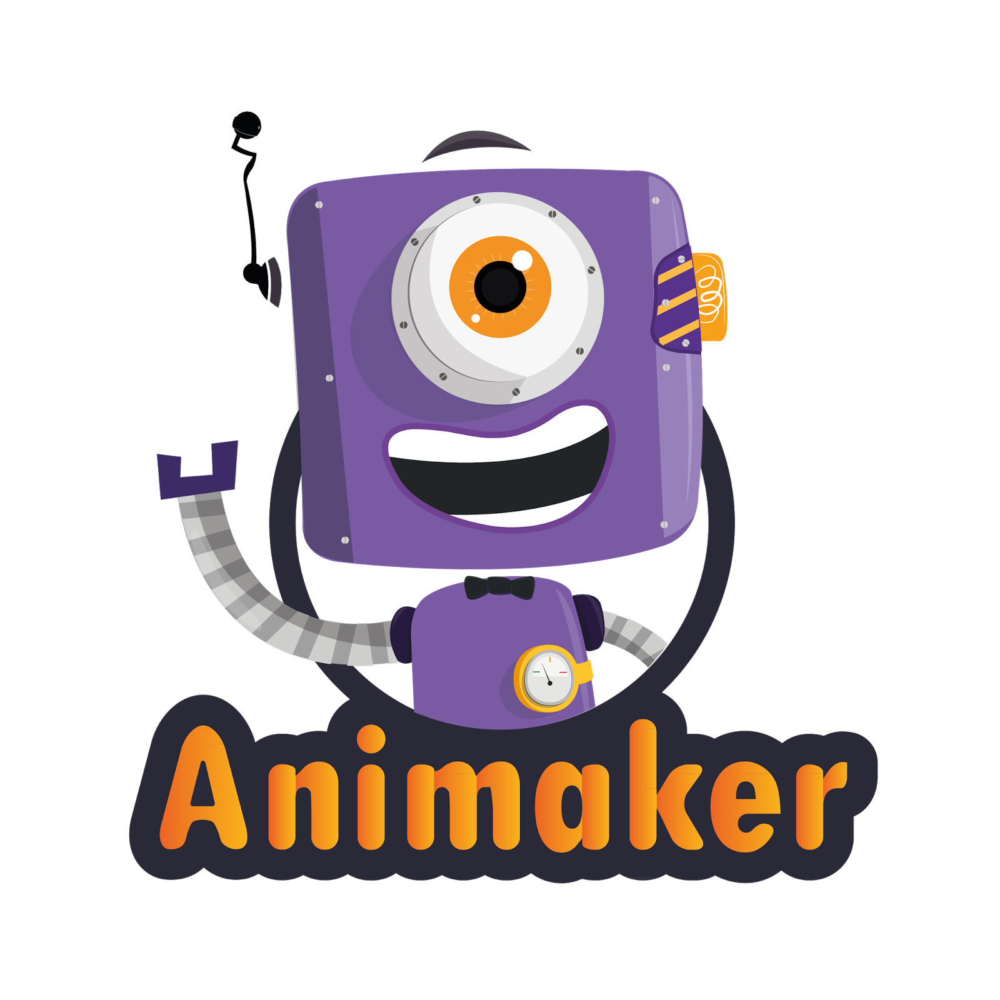

Animaker es una aplicación que podemos usar directamente en Internet para crear animaciones profesionales, permite crear escenas, arrastrar personajes y crear un guión para desarrollar una animación. Los resultados pueden ser exportados a youtube. Animaker cuenta con una opción gratuita y de pago, la opción gratuita permite vídeos de hasta 2 minutos y exportación SD.
Una vez creada la cuenta hay varios escenarios en el menú, así como elementos que se pueden arrastrar hacia cada uno de ellos y definir el movimiento de cada elemento, configurar el sonido de la animación. Una de sus principales ventajas es la flexibilidad que ofrece a la hora de mover personajes.
Animaker es ideal para quien no tiene muchos conocimientos en edición de vídeo, ya que son pocas las configuraciones para generar un resultado atractivo en poco tiempo [1].
A continuación se muestra un videotutorial de la herramienta: